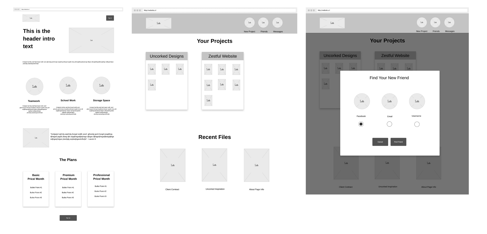

Design Roles
- UX Research & Design
- Branding
- Visual Design

Cloud Collab Dashboard
These results were created after extensive research, development, and revisions. The project goals were met by creating an all-in-one cloud storage platform that addresses the collaboration needs of the user by making it into a social media platform where one can connect, communicate and collaborate on projects with their friends. Known as Cloud Collab, this app inspires individuals and teams to get their head in the clouds.
Cloud Collab Dashboard
These results were created after extensive research, development, and revisions. The project goals were met by creating an all-in-one cloud storage platform that addresses the collaboration needs of the user by making it into a social media platform where one can connect, communicate and collaborate on projects with their friends. Known as Cloud Collab, this app inspires individuals and teams to get their head in the clouds.
Sample Questions from Survey
A Google Forms conditional logic survey was conducted to learn more about current cloud storage user preferences and habits as well as the desired features of a new app. The survey overview is below:
A Google Forms conditional logic survey was conducted to learn more about current cloud storage user preferences and habits as well as the desired features of a new app. The survey overview is below:
Sample Questions from Survey
A competitive analysis was also conducted on Google Drive, Evernote, and Pinterest to learn about the existing products on the market. Both features and design aesthetic were analyzed to determine what our new product should be like. The takeaways are listed below:
A competitive analysis was also conducted on Google Drive, Evernote, and Pinterest to learn about the existing products on the market. Both features and design aesthetic were analyzed to determine what our new product should be like. The takeaways are listed below:
34|Charlotte, NC|Female
Six months ago Betsy relocated to Charlotte, NC, since she landed her first managerial role at a new marketing agency. Currently, her company uses several platforms to work on projects. There is not a one-stop shop where they can collaborate, share inspiration, communicate, and create documents all on one site.
She has to login into multiple sites to view her team’s work. There is not a way to communicate with them about their work, where it is displayed.
29|New York, NC|Male
He has had a successful design business for the last 4 years. He currently doesn't have an easy way to pull the research and inspiration he finds online for his client projects into a working document. He would love the saving features of Evernote and Pinterest mixed with the document creation and sharing on Google Drive.
He has to save inspiration in one place and create documents in another which makes it difficult to share the project updates he has with clients.
23|Boston, MA|Female
Sally is in her second year of Harvard Law. Note taking is a huge part of her life but unfortunately, she hasn't discovered the easiest way to pull her notes into her assignments while working online. The platform she uses doesn't have as great of document creation as Microsoft Office, so she is constantly juggling tabs while doing schoolwork.
There is not enough storage space for her notes and her lengthy papers. The document creation features where notes are stored are subpar.
The discover phase led to the determination of the main features a user would want in a new product. User Stories were created to list the full scope of the features. They are categorized by a new user, returning user, and administrator and their priority. Here is a sample of the user stories:
| Role | Task | Importance |
|---|---|---|
| As a new user | I want to create an account | High |
| As a new user | I want to create a document (text, spreadsheet, presentation) | High |
| As a new user | I want to upload a file (document, image, video) | High |
| As a returning user | I want as much free storage as possible | High |
| As a returning user | I want to create folders | High |
| As a returning user | I want to organize content (move, delete, rename, share) | High |
| As a returning user | I want to access my account from anywhere | High |
| As an administrator user | I want to view all accounts | High |
| As an administrator user | I want to help users get into their account | High |
Once the user stories were determined, they were then converted to user flows in Figma to illustrate how the user would interact with the platform to accomplish those goals. Two user flows examples are shown below:
Creating a New Document User Flow
Messassing Friend(s) User Flow
Once the features and flows were determined pen and paper sketches were created, for all the applicable screens. The sketches were then turned into wireframes using Figma and were used to create a low fidelity prototype with InVision.
Wireframes of Landing page, Dashboard, and Create New Page (Left to Right)
Two usability studies were conducted on this prototype to test the onboarding process, creating a document, as well as organizing documents. I received positive feedback that even with the lack of detail in the prototype it was pretty easy to navigate with the appropriate headings.
My first goal was to select a name. Knowing that collaborating with friends is essential to set this product apart from the competition, I knew I wanted to incorporate it into the name. When I started to think about the social media side, I realized that influencers are at the forefront of online marketing. They often have collaborations or “collabs” with brands, which is why I went with Cloud Collab. It identifies it as a cloud platform but has the social media and teamwork aspect covered. Plus, it rolls off the tongue.
A style guide was developed and delivered for this project. Below is an over view of the branding. The complete branding and it’s components can be seen in the style guide.
VIEW STYLEGUIDEI wanted the brand to have a professional feel but still have a fresh, clean, and bright approach for the social media aspect. I created this mood board to set a clear direction for the branding. This lead to determing the typography, color pallette, official logo, and brand accents.
I wanted the brand to have a professional feel but still have a fresh, clean, and bright approach for the social media aspect. I created this mood board to set a clear direction for the branding. This lead to determing the typography, color pallette, official logo, and brand accents.
I knew I wanted to incorporate a cloud into the logo that had a teamwork aspect to it. After sketching out my ideas and refining them in Figma, the Cloud Collab logo was born.
The logo represents the balance of professionalism and fun that can be had on Cloud Collab. The two arrows come together to create a cloud, much like users work together to complete a project. The 3-D look of the cloud has our signature navy in the background to show the core features of online document creation while the light blue elevates the design which is symbolic of how the social media aspect of the platform creates the collaboration means of the future.
I knew I wanted to incorporate a cloud into the logo that had a teamwork aspect to it. After sketching out my ideas and refining them in Figma, the Cloud Collab logo was born.
The logo represents the balance of professionalism and fun that can be had on Cloud Collab. The two arrows come together to create a cloud, much like users work together to complete a project. The 3-D look of the cloud has our signature navy in the background to show the core features of online document creation while the light blue elevates the design which is symbolic of how the social media aspect of the platform creates the collaboration means of the future.
Navy blue is highly regarded as a color of professionalism. Due to the document creation and the role it could have in a workplace, Navy was the perfect color to be the cornerstone of the brand since it is both strong and clean.
Cloud Collab is not all work no play. The social media aspect of the platform gives it an elevation that is represented in this sky blue color. It is a nice contrast to the Navy when used together in a design.
Yellow is the color of friendship. Since the friending and messaging makes the platform unique to its competition, those features needed to stand out, all modals that involve collaboration will feature yellow.
New Republic was chosen to be the logo and heading font for the brand due to its weight and shape being similar to that of the cloud in the logo. Avenir has some similar features in it’s characters making it a great compliment of SF New Republic.
The final phase of the project was to create a high fidelity prototype that was complete with all of the branding components. Three iterations of the design were designed. After iteration one was finished, a usability test was conducted to test the aesthetic and function of Cloud Collab. With those changes in effect, a preference test was conducted on iteration two that focused on small design details as well as an overall critique from a mentor. That feedback led to the finalization of the design and the prototype that was delivered. The following are examples of major changes that occurred to the sales landing page, dashboard, and finding friend screens.
VIEW PROTOTYPEDuring the usability testing, the main feedback I was given was the size and spacing of elements were too large, which caused excessive scrolling. I chose to implement an 8pt grid to combat this issue. It created a consistent layout that in turn, tightened the design.
Between the second and final iteration, I realized that centering so much text under the hero is hard to read. I chose to break it into a dual section area so that there was a mockup displayed right of the left align descriptive text.
After the second iteration, I was challenged to make the final as life-like as possible. That meant adding in the little details. For the landing page I added additional information to the pricing structure and created a footer section that a typical page would have.
After the first iteration changes, the navigation bar was reduced significantly in size. Following the second round of changes, the icons were split into pages and actions. Friends and messages icons were placed to the left, whereas the create new was placed alone to standout.
Between the first and second iteration, the projects folder was widened to reduce the vertical length. For the final iteration, it was turned more life-like by the folder shape and received an inactive vs. active state that would only show the previews when that folder was selected.
The thumbnails went through a major transformation during the three iterations. For the second, they were condensed in size to show more at one time. For the final changes, they were turned into little mockups of actual documents vs. icons to give it more of a realistic touch.
During the usability testing, I was given feedback that the icon for the username option to select a new friend was confusing as an @. One user suggested using the cloud to represent the way to find someone who is already on Cloud Collab.
Between the second and final iteration, I decided to completely cover the screen the modal sat above with the dark overlay. This way, the attention was solely focused on the modal options and not that of the navigation bar.
The original color to represent the friendship features of the sight was a deep golden orange. I was given a suggestion of softening the tone to a more true yellow. The color seemed to flow nicer with the sky blue, and so the color palette was changed right at the end.
At the beginning of this project, I was somewhat surprised that the task was to enter an already congested and competitive industry but had very little tangibles on how the product should stand out. The social media aspect of the idea was intriguing, and I agreed it seemed to be a hole in the market. I was excited to take on the challenge. The steps that I took to go from having very little ideas in the beginning to a thoughtfully esearched, developed, and designed prototype were crucial to the success of this project. The design process allowed Cloud Collab to come to fruition and become a product that I was proud to add to my portfolio.
The biggest challenge of this project was it’s three-week time frame. If given more time, I would have spent it initially growing my participant base for the user survey, to diversify my user pool and their feedback. I would have also conducted additional usability tests throughout the design process to eceive different input about the useer experience of Cloud Collab. There were several design learning curves I had to master. For instance, focusing on sizing and spacing elevated my initial design. I also had to learn to make the landing page and supporting pages look as legitimate as possible Cloud Collab was an exciting project to work on and inspired me to get my head in the clouds.